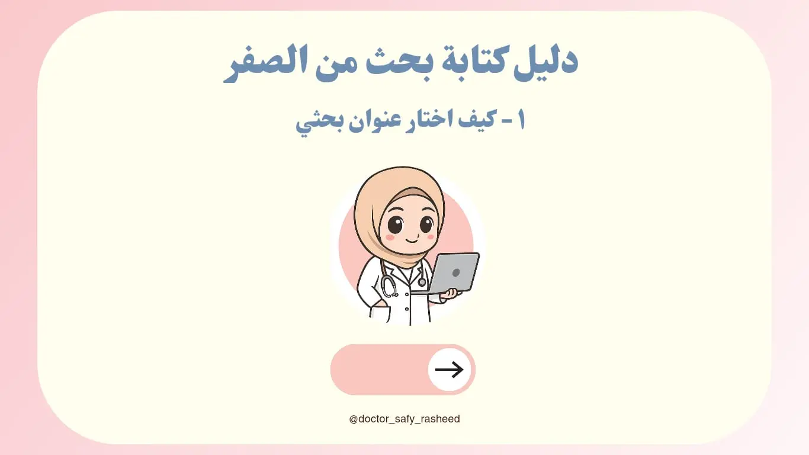
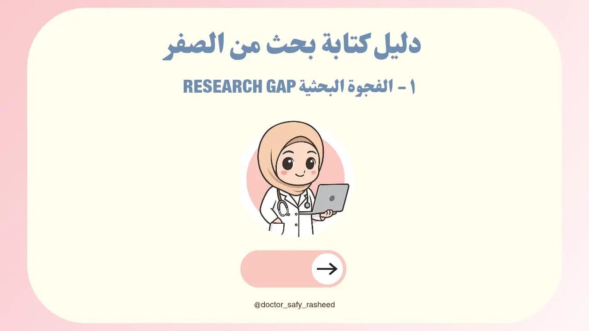

حلول تعليمية راقية
نحوّل الفكرة المعقدة إلى محتوى منظم سهل الفهم والتقديم.
نساعدك في إنجاز أبحاثك ورسائل الماجستير والدكتوراه بجودة أكاديمية عالية ومعايير بحث علمي دقيقة. نقدم دعمًا متكاملاً للطلاب والباحثين في مصر والسعودية والكويت، يشمل الكتابة والتنسيق والتوثيق العلمي، مع توفير الوقت والجهد وضمان أفضل نتيجة ممكنة لعملك الأكاديمي.
نحوّل الفكرة المعقدة إلى محتوى منظم سهل الفهم والتقديم.
نراعي المعايير الأكاديمية مع لمسة بصرية هادئة ومقنعة.
في هذا القسم، نوفر لك مقالات مختارة بعناية لمساعدتك في كتابة الأبحاث، إعداد التقارير، وتصميم العروض التقديمية بشكل احترافي. كل مقال مصمم ليختصر عليك الوقت ويعطيك خطوات واضحة وسهلة التطبيق. سواء كنت تبدأ من الصفر أو تحتاج تطوير عملك الحالي… ستجد هنا ما يدعمك. ويمكنك البدء بقراءة كتابة البحث العلمي من الصفر، ثم متابعة اختيار عنوان بحث قوي أو الفجوة البحثية.

تعلم كيفية كتابة بحث علمي من الصفر خطوة بخطوة، بداية من اختيار الموضوع وحتى توثيق المصادر، بأسلوب مبسط يناسب جميع الطلاب.
اقرأ المزيد
تعلّم كيف يوجّهك اختيار عنوان بحث واضح نحو بحث علمي أكثر تركيزًا، مع خطوات عملية تدعم كتابة أبحاث قوية وتقدّم لك مساعدة أكاديمية مبكرة.
اقرأ المزيد
تعرّف على معنى الفجوة البحثية وكيف تدعم بناء بحث علمي أكثر إقناعًا، مع شرح يربطها بخطوات كتابة أبحاث واضحة ويقدم مساعدة أكاديمية عملية.
اقرأ المزيدهل تمتلك مهارات أكاديمية أو إبداعية وترغب في العمل ضمن فريق احترافي؟
نحن نبحث دائمًا عن أشخاص متميزين لديهم شغف بالتعلم والتطوير، للانضمام إلى فريقنا والمساهمة في تقديم خدمات عالية الجودة.
للتقديم، يرجى إرسال السيرة الذاتية ونماذج من أعمالك عبر الواتساب أو البريد الإلكتروني.
يمكنك التواصل معنا مباشرة عبر الواتساب أو إرسال تفاصيل طلبك من خلال النموذج التالي، وسيظهر لك تنبيه تجريبي داخل الواجهة.
إذا كنت ترغب في استجابة سريعة ومباشرة، فالواتساب هو القناة الأنسب لطلب الخدمة أو إرسال تفاصيل المشروع.
تواصل عبر واتساب الآنتعرف على تفاصيل التنسيق، الأسعار، أدوات الاقتباس، وطريقة طلب الخدمات بكل شفافية.
يمكنك إرسال دليل التنسيق أو تعليمات الجامعة، بالإضافة إلى الملف المطلوب مراجعته، حتى نحدد إمكانية تنسيق العناوين والفقرات والجداول والأشكال والمراجع وفقًا للتعليمات المحددة.
يبدأ ذلك بمراجعة تقرير التشابه، وتحديد المقاطع التي تحتاج إلى معالجة، وإعادة صياغة الأفكار بأسلوب علمي سليم عند الحاجة، مع توثيق المصادر بصورة صحيحة. ولا يعني انخفاض نسبة التشابه وحده أن البحث خال من مشكلات الاقتباس أو التوثيق.
لا يمكن ضمان نسبة تشابه محددة دون معرفة محتوى الملف ومعايير التقييم. تختلف النتائج بحسب النص والمراجع ومتطلبات المؤسسة التعليمية. ويمكن مناقشة مراجعة التشابه وتحسين التوثيق والصياغة قبل الاتفاق على نطاق الخدمة.
نعم، نقدم خدمة توثيق وتنظيم المراجع باستخدام أنماط التوثيق الأكاديمية المناسبة، مثل APA و MLA وغيرها، وفقًا للخدمة المطلوبة وتعليمات الجامعة. يُفضّل إرسال دليل التوثيق المعتمد للتأكد من تطبيق الإصدار الصحيح.
نقدم خدمة توثيق المصادر وإدارة المراجع باستخدام Mendeley، بما يساعد على تنظيم المراجع والاستشهادات داخل النص وقائمة المراجع وفقًا لنمط التوثيق المطلوب.
نعم نقدم خدمات تصميم العروض التقديمية الأكاديمية مع تنظيم المحتوى وتنسيق الشرائح وتحسين وضوح المعلومات بصريًا، بما يتناسب مع موضوع العرض ومتطلبات التقديم.
يمكنك التواصل معنا من السعودية أو الكويت أو أي دولة أخرى للاستفسار عن الخدمات المتاحة وإرسال تفاصيل الطلب إلكترونيًا، مع تأكيد إمكانية التنفيذ وفقا لنوع الخدمة.
لو مش متأكد من الخدمة المناسبة، ابعت لنا تفاصيل المطلوب وتعليمات الجامعة والملفات المرتبطة به هنراجع احتياجك ونوضح لك الخدمة المناسبة ونطاقها قبل الاتفاق، حتى ما تدفعش مقابل خدمة مش محتاجها.
يتم تحديد السعر حسب نوع الخدمة، وحجم العمل، ومتطلبات الجامعة، والموعد النهائي. أرسل تفاصيل طلبك للحصول على عرض سعر واضح قبل البدء، مع توضيح أي تكاليف إضافية إن وجدت.
تعتمد مدة التنفيذ على حجم العمل وتعقيده والموعد المطلوب. بعد مراجعة التفاصيل، نوضح لك المدة المتوقعة قبل تأكيد الطلب. وإذا كان موعد التسليم قريبا، اذكر ذلك من البداية حتى نتحقق من إمكانية التنفيذ في الوقت المتاح.
لتحديد التكلفة والمدة بدقة، أرسل وصف المطلوب، وتعليمات الجامعة أو الدكتور، وعدد الصفحات أو الشرائح إن وجد، والتخصص، والموعد النهائي. كلما كانت التفاصيل أوضح، كان تقدير نطاق العمل أدق.
يمكنك التواصل معنا من السعودية أو دول الخليج للاستفسار عن إمكانية تنفيذ طلبك عن بعد. أرسل تفاصيل الخدمة والموعد المطلوب، وسنوضح لك إمكانية التنفيذ والتكلفة وطريقة التسليم قبل التأكيد.
نعم عرض السعر مجاني. تُحدد التكلفة بناءً على نوع الخدمة وحجم العمل والتفاصيل المطلوبة والموعد النهائي. أرسل لنا متطلباتك للحصول على عرض سعر واضح قبل تأكيد الطلب، دون التزام بالدفع مقابل عرض السعر نفسه.
يتم دفع قيمة الطلب كاملة مقدمًا بعد الاتفاق على الخدمة والتكلفة وموعد التسليم. نوضح لك تفاصيل الطلب والمبلغ المستحق قبل تأكيده، حتى تكون على دراية بما ستدفعه وما يشمله الاتفاق.
نعم، التعديلات مجانية إذا كانت ضمن نطاق الطلب الأصلي والمتطلبات التي تم الاتفاق عليها. أما التغييرات الجديدة أو إضافة مهام لم تكن ضمن الاتفاق، فقد تتطلب إعادة تقدير التكلفة والمدة بعد الرجوع إليك.